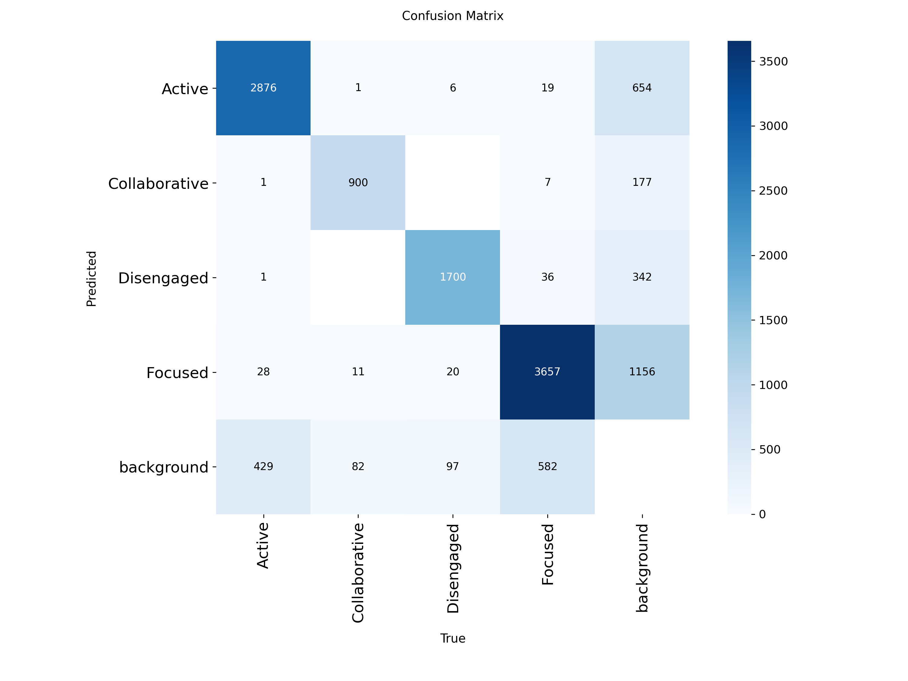
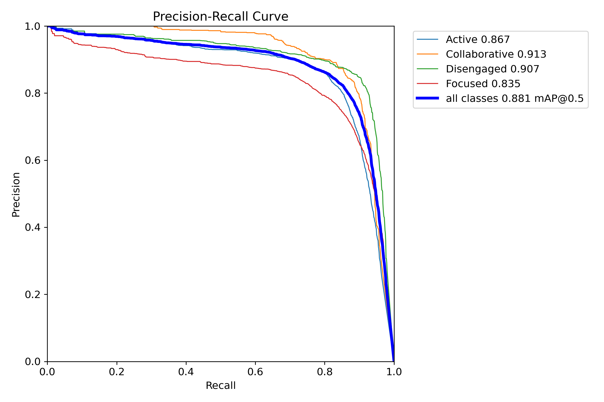
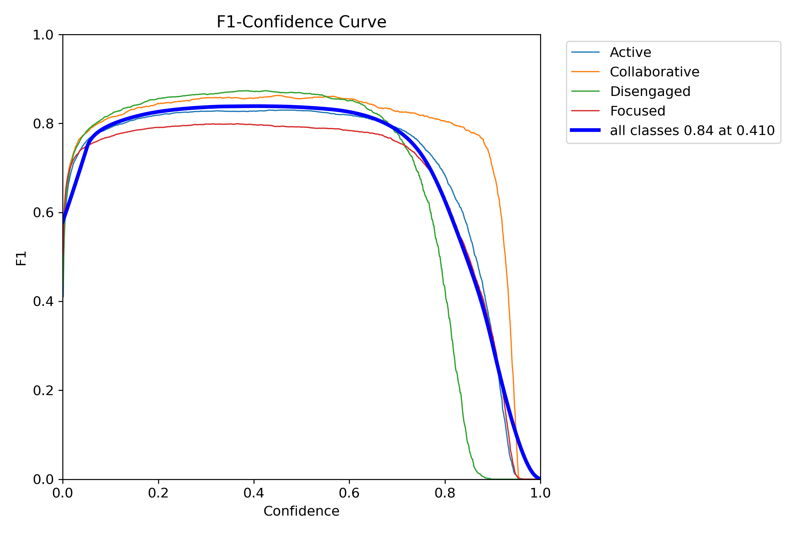
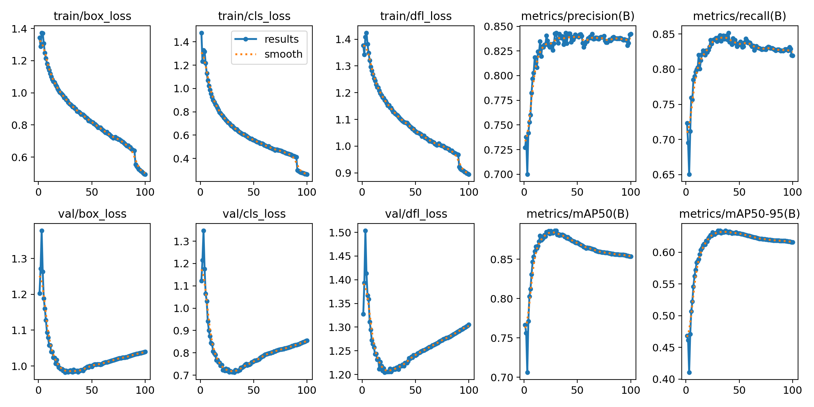

Vision-Based Students' Engagement Assessment
Automated detection of fine-grained student behaviors in crowded classrooms, mapping physical actions into four real-time engagement levels on annotated video output.
Interactive Video Inference Demo
Upload a classroom video or image below. The custom YOLO11m model processes each frame and outputs an annotated video with engagement bounding boxes.
Problem Statement
Real-World Limitation: Teachers in primary classrooms experience "split attention," making it difficult to monitor every student simultaneously. Traditional observation and post-class surveys are subjective, labor-intensive, and delayed.
Technical Hurdles: Spatio-temporal video models (such as SlowFast) require heavy compute and often overfit to backgrounds, while skeletal pose-estimation fails in crowded classrooms due to severe desk and peer occlusion.
Research Objectives
-
Occlusion-Resilient Detection: Implement an enhanced YOLO11m workflow capable of detecting subtle student actions in high-density classrooms.
-
Pedagogical Behavior Mapping: Group 7 fine-grained physical actions into 4 standardized engagement categories (Active, Collaborative, Focused, Disengaged).
-
Annotated Video Diagnostic Tool: Generate labeled classroom videos in real time to help educators evaluate teaching effectiveness.
System Workflow
From raw classroom footage to annotated behavioral assessment.
Dataset Fusion & Relabeling
Combined SCB-v3, SCB-v5, Roboflow samples, and custom annotations, merging 7 behaviors into 4 engagement classes.
Augmentation & Training
Resized to 640×640, applied Mosaic (1.0) and Albumentations for 90 epochs, then fine-tuned for the final 10 epochs with Mosaic disabled.
Video Frame Extraction
Extracts sequential frames from input classroom videos and runs fast 13.2ms inference using the trained YOLO11m weights.
Annotated Video Output
Renders color-coded bounding boxes and confidence scores for Active, Collaborative, Focused, and Disengaged states onto the output video.
Dataset Engineering & Taxonomy
Constructed from SCB-Dataset3 (hand-raising, reading, writing), SCB-Dataset5 (discussion), Roboflow (leaning on desk, phone usage), and manual annotations for answering by standing up.
| Engagement Class | Merged Fine-Grained Behaviors | Total Labels | Val Instances |
|---|---|---|---|
| Active | Hand-raising (15,175) + Answering standing (932) | 16,111 | 3,335 (1,128 imgs) |
| Collaborative | Discussing with peers (5,545) | 5,545 | 994 (163 imgs) |
| Focused | Reading (14,266) + Writing (6,924) | 21,194 | 4,301 (729 imgs) |
| Disengaged | Using phone (4,958) + Leaning on table (3,829) | 8,791 | 1,823 (367 imgs) |
Dataset Label Share (51,641 Total)
Distribution of annotated bounding boxes across classesYOLO11m Training & Validation Results
Trained for 100 epochs on an NVIDIA Tesla T4 GPU (16 batch size, 640px resolution, MuSGD optimizer, AMP enabled). Validated across 1,511 unseen classroom images containing 10,453 student instances.
86.7%
mAP@50 (mAP50-95: 62.5%)91.3%
mAP@50 (mAP50-95: 76.0%)83.5%
mAP@50 (mAP50-95: 62.0%)90.7%
mAP@50 (mAP50-95: 53.1%)Class-Wise Performance (Precision, Recall & mAP@50)
Validation results on best.pt checkpointOverall Model Summary
Fused YOLO11m: 126 layers, 67.7 GFLOPsTraining & Evaluation Curves
Exported directly from the Kaggle validation run
(/kaggle/working/runs/detect/classroom_study/v1). Place your saved PNG plots in
assets/img/ to display them below.
Confusion Matrix
Class prediction accuracy vs. ground truth
Precision-Recall Curve
mAP@0.5 across all 4 engagement classes (0.881)
F1-Confidence Curve
Balance of precision and recall across confidence thresholds
100-Epoch Training Curve
Box loss, Cls loss, DFL loss & mAP convergence